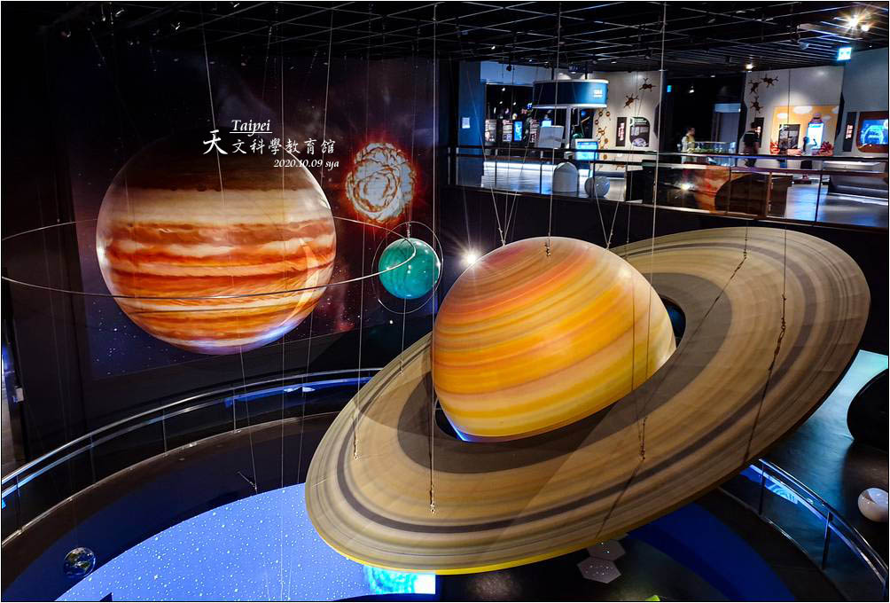
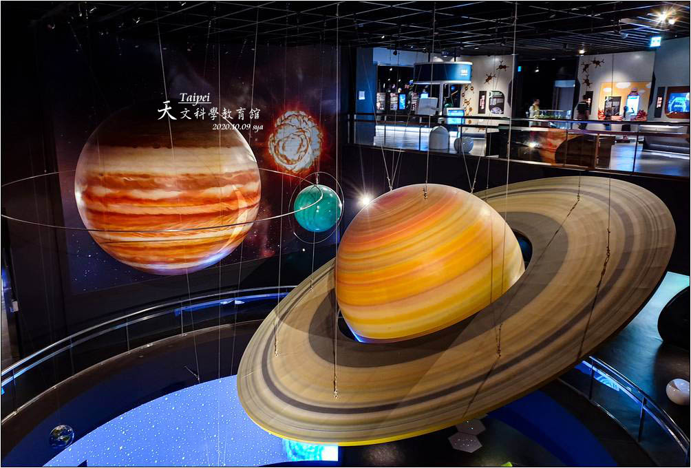

景點介紹
天文科學教育館成立於民國八十五年十一月七日（立冬），承接原臺北市立天文臺的各項業務，並陸續增加多項儀器設備。八十六年七月二十日（太空探險日）展示場一至三樓展示區完成時，已然全面開放，為臺北市民提供更好的服務；而為了讓來館來賓跨越時空限制，由本館精心規劃，位於展示場四樓之宇宙探險設施，亦於民國九十一年七月二十日正式完工啟用。
天文科學教育館成立於民國八十五年十一月七日（立冬），承接原臺北市立天文臺的各項業務，並陸續增加多項儀器設備。八十六年七月二十日（太空探險日）展示場一至三樓展示區完成時，已然全面開放，為臺北市民提供更好的服務；而為了讓來館來賓跨越時空限制，由本館精心規劃，位於展示場四樓之宇宙探險設施，亦於民國九十一年七月二十日正式完工啟用。
